評価基準数値案・4群あり
8系統を11用途に分けて整理
必要情報・測り方・数値案・資源上限を11用途で整理。
取り組んだ内容を見る
用途ごとに、残す情報・評価指標・独立した基準データ・未確定事項を記録しました。共通設定で群内の全用途を満たせるか、検証する方針も具体化しています。
到達点：品質・時間・容量の数値案と4群の仮説まで。基準の正式固定と実験での検証はこれからです。
研究管理マスタ 建築点群リサーチ
研究課題、進捗、比較実験、論文執筆までをこのページで管理します。
2026年10月19日 ゼミ報告 · 10月12日 11時ごろ〜10月19日
RGBの問題に続き、元写真と点群を照合しました
5_CB・1_SC・3_SSの9写真を点群に対応づけました。ラベルを使わず写真からRGB候補を取得。5_CBの階段は腰壁・端部も含むため、注釈範囲を再確認します。色の正式採用と品質改善は未確認です。
必要情報・測り方・数値案・資源上限を11用途で整理。
用途ごとに、残す情報・評価指標・独立した基準データ・未確定事項を記録しました。共通設定で群内の全用途を満たせるか、検証する方針も具体化しています。
到達点：品質・時間・容量の数値案と4群の仮説まで。基準の正式固定と実験での検証はこれからです。
資料マップと、学術資料11件のやさしい説明を作成。
論文・公式資料の使える根拠、該当箇所、適用限界を整理しました。21資料×11用途の対応マップと、学術資料11件のやさしいダイジェストをHTMLにまとめました。
確認の深さは資料ごとに異なります。全21件の全文精読を示すものではありません。
9写真からRGB候補を取得し、階段・窓扉の注釈と誤りを4図で照合しました。
平均IoUは無削減33.07%、均一41.42%、CSC41.17%。両間引きの点群容量は元の49.90%。各3回実行し、特徴を再計算して同じ元点で採点しました。
配布RGBは不採用。写真RGBにも位置ずれ・遮蔽物・色差が残るため、候補の採用条件を先に固定します。品質基準は未達です。
既存42件を維持し、基準案の13箇所に加え、写真RGB・注釈監査の3箇所も登録。
10月19日に既存ExcelをGoogleスプレッドシートへ移し、共有編集できる文献台帳を作成しました。移行時の42件（学術14件・公式28件）を保持し、今回の基準案で採用した13資料・13箇所を用途別4タブに登録しました。
新規12資料と既存S18の別箇所です。10月12日の根拠資料21件を全件転記したことにはしません。
研究の進捗は記録にある内容に限定しています。10月12日の動作確認に続き、10月19日に部材分類1対象の3方式を実測しました。CSC＝周囲の形状を採点して、小区画ごとに残す点を選ぶ提案手法。
記録確認：2026年10月19日
現在地 · 03の一部
①は数値案まで、②は4群の仮説まで進みました。③は部材分類1対象・3方式を実測し、原因診断とRGB追加の4建物比較、RGB入力の問題の発見、3建物9写真との対応・RGB候補の取得まで進みました。分類品質の暫定基準は未達。残る代表用途の比較と④の最終選定はこれからです。
各段階を開くと、できたこと・次の作業・達成条件を確認できます。
11用途の必要情報・評価方法・数値案・時間と容量の上限を共通書式にそろえました。文献の評価方法と、研究側の暫定値を区別しています。
独立した参照と評価手順を用意し、予備測定で妥当性を確かめて、最終評価前に基準を固定します。
「残すべき情報／評価方法／合格ライン／時間や容量の制約」が、用途ごとに根拠付きでそろうこと。
寸法・位置／面・接続／部材識別／表示の4群を仮置きし、11用途の要求比較・所属理由・分割条件を記録しました。保存は全群共通です。
同じ群の複数用途に同一設定を適用し、すべての必須条件を満たせるか確認します。満たせなければ群を分けます。
要求比較と仮グループ表があること。3〜4群にまとまるかは仮説とし、群数を先に固定しません。
ArCHの8万点で、無削減・均一間引き・CSCを各3回測定。新しく計算した特徴で分類し、同じ元点群で採点しました。比較表1枚、窓扉の原因診断に続き、同じ13特徴と分類器にRGBだけを足す4建物比較を実施。配布RGBにラベル由来の色が混入した疑いが強く、自然色の改善根拠として扱う判断を撤回しました。
元写真からRGB候補を取得し、注釈の大枠を点検しました。次は投影精度・遮蔽物・視点間の色差と注釈規約を確認し、4_CGを含む比較条件を固定します。
代表用途の品質・時間・容量を示し、群内共有の確認範囲と未確認範囲を区別できること。
本人が最初の想定用途として「部材の自動分類・見分け」を選びました。予備実験後の卒論の最終選定とは区別しています。
予備実験の結果・研究の意義・実行可能性から、主用途と選定理由を記録します。
主用途1つ、最終評価データ、卒論の必須実験と期限が決まっていること。
次の一手：写真RGBの候補と注釈の要確認箇所を得ました。投影・遮蔽・注釈の採用条件を固定してから、4建物を再比較します。分類・メッシュ・寸法を各1用途試すだけでは、群内で設定を共有できる証明にはなりません。
動作確認と品質合格を区別しています。過去の保持率比較・重み探索は既存成果として残します。記録外の作業を未実施と断定するものではありません。数値案作成前の確認記録・動作確認の結果を読む
2026年10月19日 · 1対象・3方式を実測
点群容量はほぼ半分になりましたが、全方式で分類品質は基準未達です。この対象ではCSCの優位性を確認できませんでした。
対象はArCH 2_OSAの1タイル・80,000点。別の4建物で学習した分類器を固定し、各方式3回実行しました。品質は同じ75,772点で採点しています。
スマートフォンでは、表を横にスクロールして3方式を比較できます。
| 指標 | 無削減 | 均一間引き | CSC |
|---|---|---|---|
| 残存点数 | 80,000点 | 39,917点 | 39,917点 |
| 平均IoU（正解との重なり） | 33.07% | 41.42% | 41.17% |
| 無削減からの差 | 基準 | +8.35ポイント | +8.11ポイント |
| 柱 IoU / 再現率 | 33.83 / 50.36% | 49.15 / 83.07% | 48.92 / 83.16% |
| 窓扉 IoU / 再現率 | 1.70 / 6.70% | 1.65 / 12.53% | 1.62 / 12.20% |
| 予測なし率（採点対象） | 0.00% | 2.35% | 2.64% |
| 全処理時間 秒：中央値［最小–最大］ | 2.08 ［1.92–2.22］ | 1.97 ［1.84–2.11］ | 5.04 ［3.77–5.48］ |
| うち実処理区間 秒：中央値 | 0.89 | 0.80 | 3.14 |
| 点群容量 MiB（元の容量比） | 0.916（100.00%） | 0.457（49.90%） | 0.457（49.90%） |
| ピークメモリ MiB：3回の最大 | 544.1 | 484.3 | 484.6 |
| 試行生成物合計 MiB：最大 | 2.144 | 1.303 | 1.303 |
| 暫定判定：絶対品質 / 追加損失 | 未達 / 基準 | 未達 / 2pt以内 | 未達 / 2pt以内 |
| 暫定判定：資源上限 / 容量52% | 通過 / 基準 | 通過 / 通過 | 通過 / 通過 |
IoU＝正解との重なり、再現率＝正解の点を拾えた割合。0.05 m以内に残存点がない場合も見逃しに算入。容量は同じXYZ形式、1 MiB＝1,048,576 byte。時間は起動から保存までの中央値と範囲です。小さい画面では表を横にスクロールできます。
次の一手：RGB追加の4建物比較まで実施しました。追加診断でRGB入力の問題を確認したため、元写真との限定監査まで進みました。次は採用できる写真RGBと注釈範囲を固定します。この表は1タイルの予備結果であり、約3用途・群内設定共有・削減条件の他建物への展開は未検証です。
2026年10月19日 · 3建物・9写真の限定監査
正解ラベルや配布RGBを使わず、元写真の画素から色を取り出しました。現在は投影と深度判定を通った候補です。位置ずれ・写真だけにある遮蔽物・照明差が残り、全点の正しいRGBとは扱えません。
| 建物 | 写真 | RGB取得候補の点数／全キャッシュ | 対象クラスの候補点数／対象全点 | 新規誤りの候補点数／全新規誤り |
|---|---|---|---|---|
| 5_CB | 3枚 | 62,087 / 609,380 | 27,341 / 77,275 | 7,916 / 30,070 |
| 1_SC | 3枚 | 89,513 / 720,000 | 8,378 / 17,633 | 805 / 1,883 |
| 3_SS | 3枚 | 56,080 / 513,831 | 2,108 / 10,439 | 455 / 1,491 |
写真間の重複を除いた点ID数。5_CBの対象は階段、1_SC・3_SSは窓扉。未取得点は欠測のまま保持。候補数は品質合格点数ではありません。
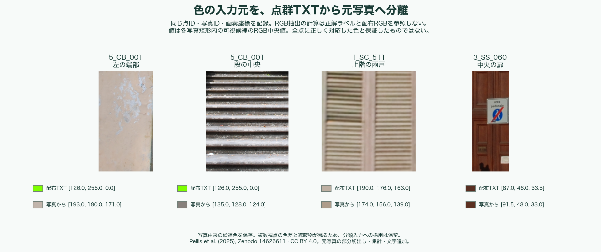
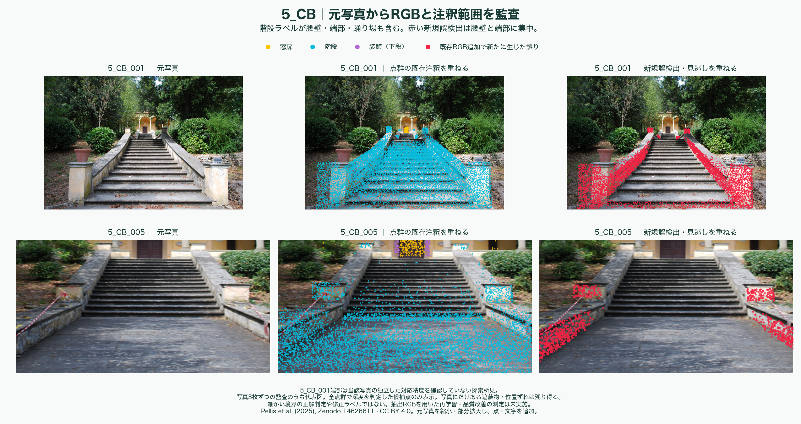
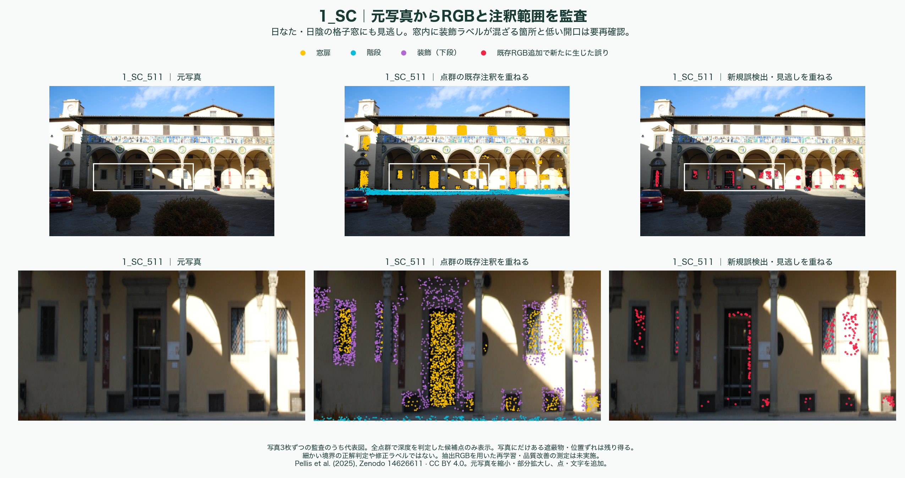
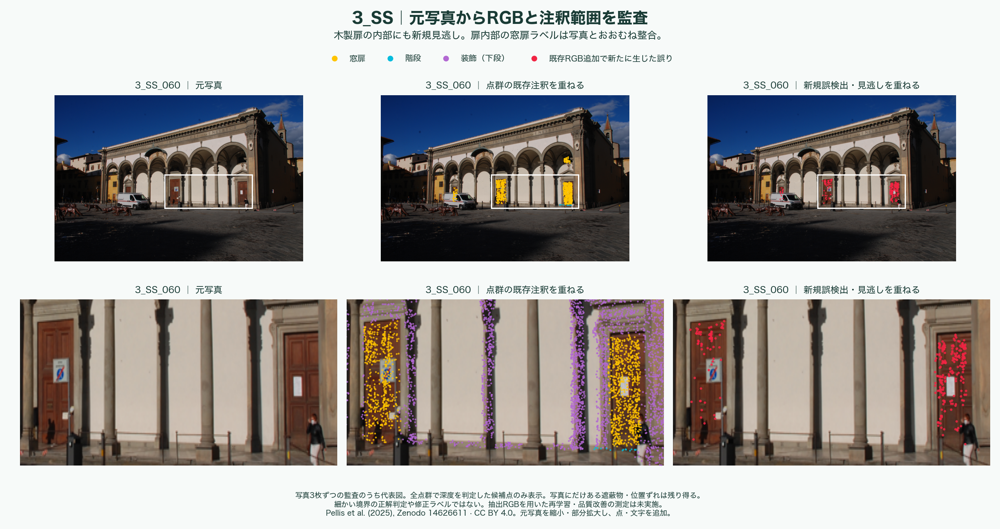
独立した対応点で投影を検証 → 遮蔽物・境界を除外して複数視点の色を整える → 注釈範囲を監査 → 4_CGを含む4建物でRGBだけを再比較します。現状は手動対応でも最大45.8pxのずれがあり、細い境界を確定できません。
元ラベル・既存13特徴・分類器・過去の測定値を保持。品質改善・正式採用は未測定です。
取得範囲・写真対応・注釈の所見・次の改善案を読む →
データと写真：Pellis et al. (2025), Zenodo 14626611（CC BY 4.0）。縮小・切出し・点と文字を追加。
2026年10月19日 · 3建物の診断と前回判断の訂正
正解クラスを表す色の混入が強く疑われます。5_CBの緑色75,722点はすべて階段、青色9,096点はすべて柱。1_SCの黄色3,772点はすべて窓扉でした。正解由来の情報が入力へ入る「ラベル漏洩」の疑いがあるため、前回の平均改善を自然色の有効性とする判断を撤回します。
前回の数値と元記録は残し、研究ログに訂正を追記しました。色の生成工程は未確認です。続く元写真との監査で、ラベルを参照しない色の取得経路を確認しましたが、分類への採用は保留です。
新たに窓扉へ流れた30,070点のうち、元は正しい階段だったのは121点。多くは元から壁・装飾でした。
配布RGB値だけを差し替えると窓扉の誤検出は減りますが、正しく階段へ戻る割合は0.28%。形状で階段を見分ける問題が残ります。
新規見逃しは1,883点／1,491点。配布RGB値の仮置換で窓扉へ戻る割合は56.38%／44.56%ですが、正解だった点が壊れる副作用もあります。
3_SSの新規群は89.27%で周辺20点も同ラベル。境界点の混在だけでは説明できません。
元TXTとXYZ・RGB・ラベルの対応に不一致はありません。元注釈が実物どおりかは別途確認が必要です。
階段の側面や窓枠の扱いは、写真・3Dと照合して判断します。今回、正解ラベルは変更していません。
5_CBは階段→窓扉、他2建物は窓扉の見逃しを数えます。5_CBの「対象エラーなし」は非窓扉という意味で、正しい階段とは限りません。表内は横にスクロールできます。
| 建物 | 新規エラー | 継続エラー | 解消・回復 | 両方で対象エラーなし | 差引き増加 |
|---|---|---|---|---|---|
| 5_CB | 30,070 | 759 | 90 | 46,356 | +29,980 |
| 1_SC | 1,883 | 13,177 | 577 | 1,996 | +1,306 |
| 3_SS | 1,491 | 4,592 | 1,252 | 3,104 | +239 |
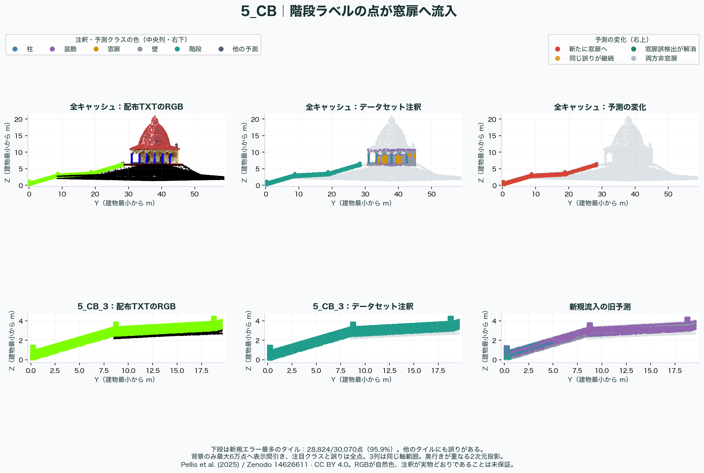
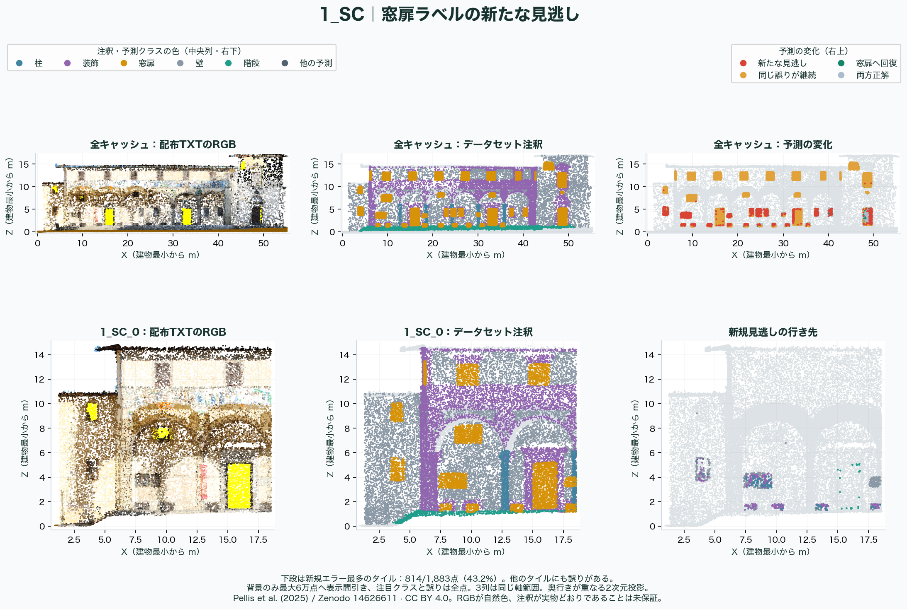
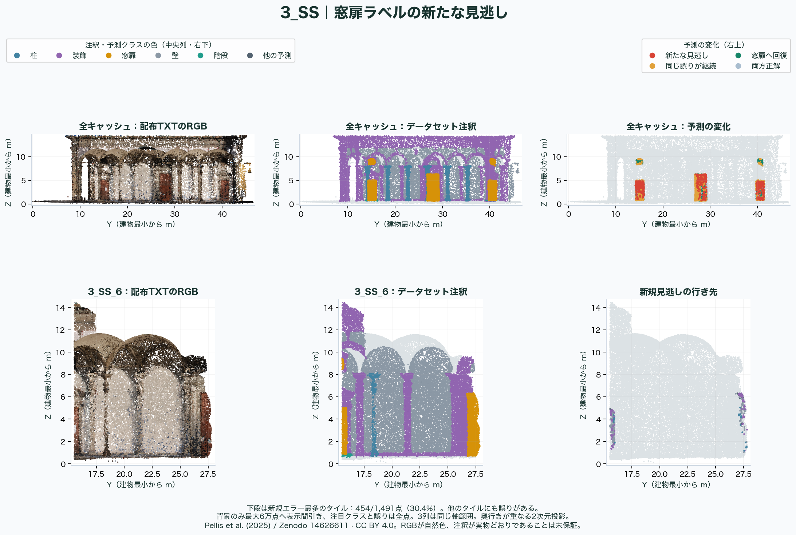
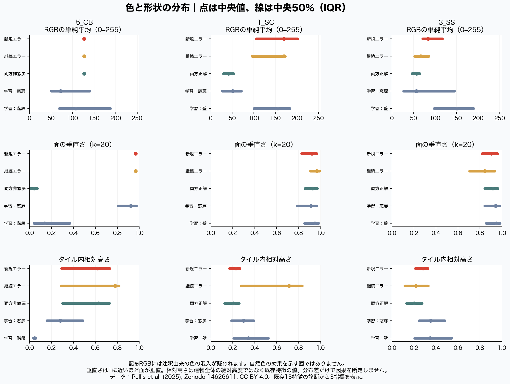
学習側で形状が近い5点のRGBを、正解ラベルを使わず選びました。形状13列と分類器を固定。クラス符号化が疑われる入力値への感度であり、自然色を変えた結果ではありません。率は全5色の予測をまとめた値で、実際の色補正の改善率ではありません。
| 建物 | 新規エラー点数 | 配布RGB値の仮置換後の対象エラー率 | 配布RGB値の仮置換後の正解クラス率 | 5色すべて対象エラーなし（点） | 5色すべて対象エラー（点） |
|---|---|---|---|---|---|
| 5_CB | 30,070 | 2.43% | 0.28% | 27,856 | 99 |
| 1_SC | 1,883 | 43.62% | 56.38% | 123 | 54 |
| 3_SS | 1,491 | 55.44% | 44.56% | 58 | 136 |
5_CBの真値窓扉対照は81.75→31.85%に悪化。1_SC・3_SSの継続見逃しの回復は8.04%／9.73%にとどまりました。差替えを改善策として採用しません。
品質基準は据え置きです。新モデルの採用・削減3方式の再比較・未使用建物での最終評価は未実施です。
全数値・色とラベルの対応・原因の根拠・限界を読む →
実データ：Pellis et al. (2025), Images&PointClouds Cultural Heritage Dataset。ArCHは分類規約の参照元。今回の4図は抽出・独自集計・描画したCC BY 4.0。
2026年10月19日 · 同じ4建物・2条件を比較
訂正：配布RGBにラベル由来の色が混入した疑いが強く、この条件を改善候補から除外します。以下の数値は再現記録として残しますが、自然色の有効性の根拠には使いません。今回の診断と訂正理由を確認してください。
既存の13形状特徴・Random Forest分類器・学習点・建物の分け方を保持。赤・緑・青の3列だけを追加しました。
1_SC・3_SS・4_CG・5_CBを1建物ずつ学習から外して採点。2_OSAは今回の学習・評価に使っていません。
窓扉IoUは平均+2.71ポイント、全体mIoUは+3.55ポイント。柱IoUは4建物すべてで上がりました。
IoUは正解との重なり、mIoUは各クラスのIoUを平均した値です。
5_CBでは階段を窓扉とする誤検出が増加。1_SC・3_SSでは窓扉の見逃しが増えました。
暫定の品質基準は未達。正式モデルへの置換、未使用建物での最終評価はしていません。
適合率＝窓扉と予測した点の正解率、再現率＝正解の窓扉点を拾えた割合。差のptはパーセントポイントです。全点をまとめた平均ではありません。狭い画面では表内を横にスクロールできます。
| 指標 | 13特徴 | 13特徴＋RGB | 差（ポイント） |
|---|---|---|---|
| 窓扉 IoU | 5.71% | 8.42% | +2.71 pt |
| 窓扉 適合率 | 6.83% | 11.48% | +4.65 pt |
| 窓扉 再現率 | 28.77% | 42.43% | +13.66 pt |
| 全体 mIoU | 20.92% | 24.47% | +3.55 pt |
| 点単位の正解率 | 50.73% | 55.16% | +4.43 pt |
| 柱 IoU | 22.17% | 24.96% | +2.80 pt |
| 柱 再現率 | 58.70% | 61.96% | +3.26 pt |
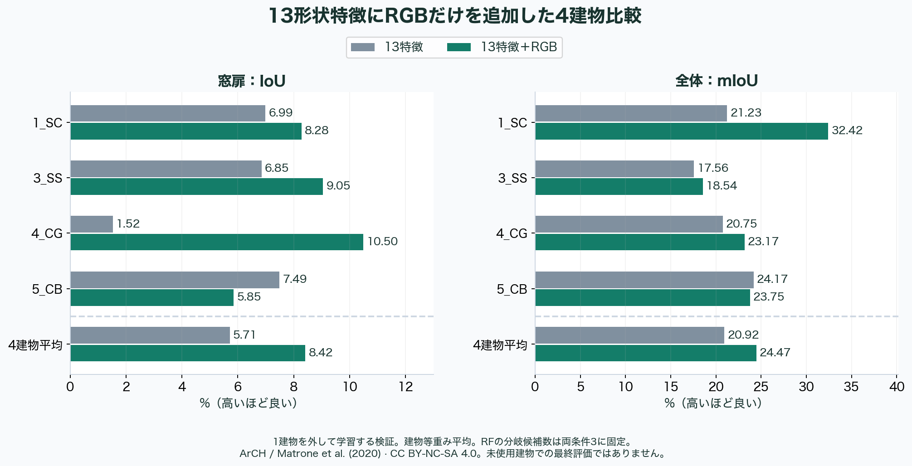
| 検証建物 | 窓扉：13特徴 | 窓扉：＋RGB | 窓扉の差 | 全体：13特徴 | 全体：＋RGB | 全体の差 |
|---|---|---|---|---|---|---|
| 1_SC | 6.99% | 8.28% | +1.29 pt | 21.23% | 32.42% | +11.20 pt |
| 3_SS | 6.85% | 9.05% | +2.20 pt | 17.56% | 18.54% | +0.98 pt |
| 4_CG | 1.52% | 10.50% | +8.98 pt | 20.75% | 23.17% | +2.43 pt |
| 5_CB | 7.49% | 5.85% | -1.64 pt | 24.17% | 23.75% | -0.42 pt |
窓扉再現率は1_SCで22.00→14.59%、3_SSで44.02→41.73%へ低下。IoUが改善しても見逃しが減るとは限りません。点単位の正解率も、平均は上がりましたが3_SS・4_CG・5_CBでは低下しました。
窓扉の再現率は32.59→81.75%に上がった一方、適合率は8.86→5.93%へ低下。誤検出は10,521→40,695点、うち階段を窓扉にする誤りは849→30,829点でした。窓扉を多く拾えても、他の部材を窓扉と判定すれば品質は下がります。
全2,563,211キャッシュ点について、元TXTまで座標・ラベル・RGBを照合しました。未対応・ラベルや色の矛盾は0。5_CBの1座標だけ元データに同一色・同一ラベルの2行があり、同じ値を割り当てたことを記録しています。元注釈の意味的な正しさを証明したものではありません。
RFは64木・最大深さ18・葉最小5・balanced・seed0を維持。元の自動設定では13列で候補3個、16列で4個になるため、両条件で3個に固定しました。元の13特徴の予測は前回と完全一致し、固定方法の変更でも木の構造・学習点の予測が変わらないことを確認しています。
RGBは固定値255で割るだけで、色補正・評価建物の統計による正規化・分類器変更はありません。ただしRGBの追加で特徴の選ばれ方は変わるため、色の情報だけを切り離した因果効果とは断定しません。
3建物の診断は完了し、配布RGBのラベル漏洩が強く疑われました。元写真の限定監査では独立RGB候補を得ました。次はその採用条件と注釈範囲を固定します。配布RGB条件は引き続き不採用です。
暫定基準の平均・重要クラスIoU70%、重要クラス再現率90%は据え置きです。現在の配布RGBは採用しません。3方式の再比較、未使用建物での最終評価はこれからです。
全クラス・誤りの点数・実験条件・判断を読む →
出典補足：実データはPellis et al. (2025), Zenodo 14626611。ArCHは分類規約参照。比較図は当時の表記を含む保存記録です。
2026年10月19日 · 4建物・5条件で切り分け
この節はRGB追加前の診断記録です。ここで提案した色の追加は実施済みで、当時の比較結果と訂正に改善と悪化の両方を示しています。
ラベルの転記ミスは見つかりませんでした。今の形状特徴と分類器は、建物を替えると窓扉を十分に見分けられていません。ただし、特定の特徴1つや分類器だけが原因とは特定できません。今回試した変更は、窓扉の改善策として即採用しません。
対象8万点の座標・ラベルは元TXTから実験入力まで全点一致。重複・矛盾は0でした。
未確認：元注釈そのものの正しさ。写真との正確な対応・人手の再注釈はこれからです。
学習側と対象で高さ・点の密度が異なります。高さを外すと対象の窓扉IoUは1.70→2.16%ですが、別建物平均は5.71→4.92%に低下しました。
高さだけを取り除く方法は採用しません。
同じ13特徴でRFからExtra Treesへ変更しても、別建物の窓扉IoUは5.71→5.28%。全体平均の上昇は、窓扉の改善を意味しません。
分類器1種類の変更だけでは解消しませんでした。
RF（Random Forest）とExtra Treesは、複数の決定木を組み合わせる分類器です。特徴は、点の周りの形や高さを数値にした入力情報。IoUは正解との重なり、mIoUは各クラスのIoUの平均です。
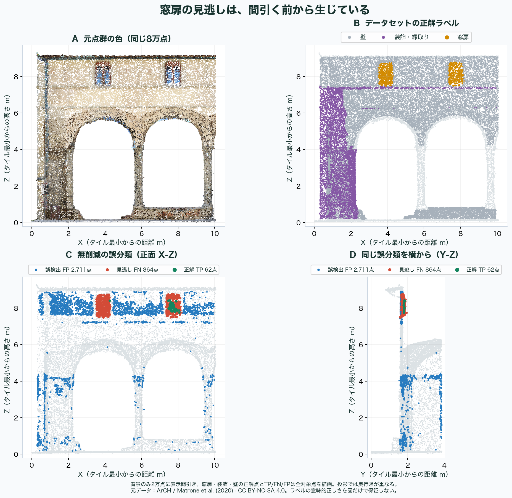
最も多い見逃しは「装飾・縁取り」への誤分類です。窓扉926点中660点が装飾、166点が壁と判定されました。一方、窓扉と予測した2,773点のうち2,192点は壁。見逃しと誤検出の両方を減らす必要があります。
均一・CSCの見逃し810・813点のうち、近くに残存点がなく予測を戻せなかった点は23・18点です。残る787・795点は距離内の分類誤りで、点の消失だけでは説明できません。
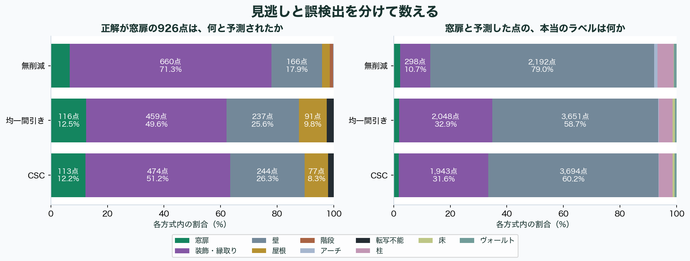
別建物の値：1_SC・3_SS・4_CG・5_CBのうち1建物を学習から外す検証を4回行い、建物ごとに等しく平均。対象タイルの値：原因探索に使った2_OSAの既知の8万点で、最終評価の値ではありません。2_OSAはすべての学習・4建物検証から除外しました。
表は狭い画面では横にスクロールできます。近傍半径は周囲20／60点までの距離を表す2列です。
| 変更条件 | 別建物の窓扉IoU | 対象タイルの窓扉IoU | 別建物の全体mIoU |
|---|---|---|---|
| RF・全13特徴（基準） | 5.71% | 1.70% | 20.92% |
| RF・高さだけ除外 | 4.92% | 2.16% | 19.46% |
| RF・半径2列だけ除外 | 4.68% | 0.69% | 21.07% |
| RF・高さと半径を除外 | 3.75% | 1.64% | 21.76% |
| Extra Trees・全13特徴 | 5.28% | 1.81% | 23.53% |
高さを除く条件では、対象の全体mIoUも33.07→25.84%へ低下。Extra Treesは別建物の全体mIoUを上げましたが、窓扉は悪化しました。今回の結果だけで特徴を捨てたり、分類器を置き換えたりする根拠にはできません。
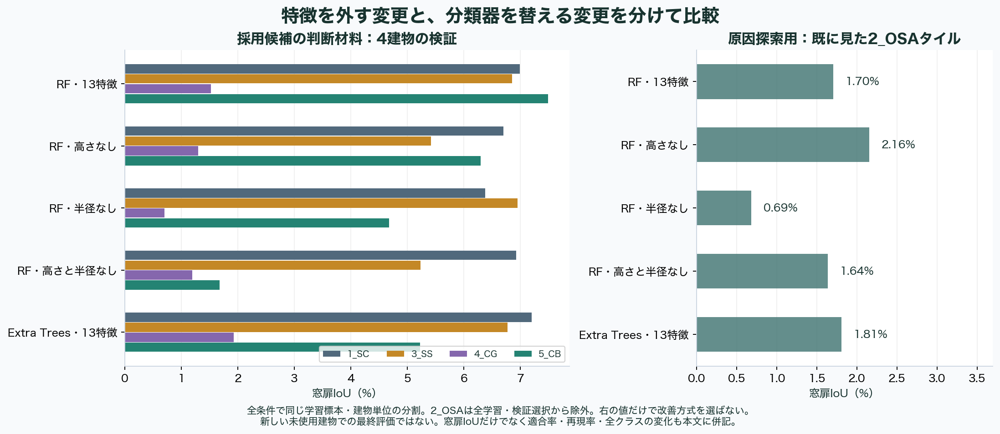
学習窓扉の相対高さ中央値は0.306、対象は0.870。20点近傍の半径中央値相当は0.164 mと0.121 mでした。高さはモデル内重要度24.59%と最大ですが、これは因果効果ではありません。
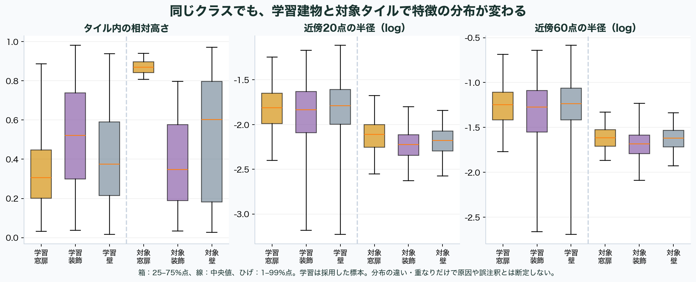
この時点では追加効果は未測定でした。RGBの比較は上の最新結果へ反映済みで、固定距離・周辺形状は未測定です。候補ができたら3方式を再比較します。品質基準は据え置き、未使用建物を最終評価用に確保します。
全測定値・診断条件・限界・改善案を読む →
ArCH dataset, Matrone et al. (2020)。4図：CC BY-NC-SA 4.0。正解ラベルはデータセットの注釈であり、人手で再確認した真値ではありません。
いつ、何を進めたか
成果と、その時点で残った課題を日付ごとに記録します。各日付を開くと、作業内容と資料を確認できます。
5_CB・1_SC・3_SSの9写真を点群と照合。ラベルと配布RGBを参照しない抽出で、重複除外207,680点の写真RGB候補を保存し、347,758点×写真を元画素と全件照合。5_CBは腰壁・端部・踊り場まで階段ラベルが広がり、1_SCは格子・枠と低い開口が要確認、3_SSは確認した扉内部で注釈と概ね整合した。4図、11矩形、18構造対応を記録し、文献台帳へ3引用箇所を追記・再読取。
当時の残り・限界 候補は正式な分類用RGBではない。手動の構造対応でも最大45.8pxの差、写真にだけある遮蔽物・視点間の色差が残る。Orientation=1と4_CGは未監査。元ラベル・分類器・13特徴を維持し、注釈の正式変更や写真RGBの品質比較は未実施。次は独立対応点・遮蔽マスク・色統合・注釈規約を固め、4建物でRGBだけを再比較。
5_CBの階段誤検出、1_SC・3_SSの見逃しを4図と点別遷移で診断。3固定モデルの保存予測を完全再現し、形状を固定した5色差替えを実施。多数の単色RGBが正解クラスと完全一致し、ラベル由来の色の混入が強く疑われたため、このRGB条件を改善候補から除外。前回の平均改善を自然色の有効性とする判断を撤回し、数値は再現記録として保持した。出典をPellis et al. (2025)と補足し、文献台帳へ2資料を追記・照合。
当時の残り・限界 5_CBは色差替えで窓扉誤検出が減っても正解階段は0.28%。1_SC・3_SSの新規見逃しは56.38%／44.56%が窓扉へ戻る一方、正解点が壊れる副作用もある。色の生成履歴、元写真との対応、注釈の意味的正しさは未確定。次はRGBと注釈の監査を先に行い、その後に周辺形状1条件を比較。自然色の有効性・モデル採用・3方式再比較は未検証。
訂正・補足：元の記録を見る
同じ13特徴・分類器・学習標本・4建物分割でRGBだけを追加。全256万3,211点の色対応を元TXTまで照合。窓扉IoUは建物平均5.71→8.42%、全体mIoUは20.92→24.47%で、3/4建物で両方改善しました。前回の基準予測と完全一致を確認し、比較図・全クラスの数値を作成しました。
当時の残り・限界 5_CBは階段を窓扉とする誤検出が849→30,829点に増え、窓扉IoU・全体mIoUが悪化。1_SC・3_SSの窓扉再現率も低下しました。RGBは候補に残しますが正式採用せず、次は建物ごとの誤りを点検します。暫定品質は未達で、seedの安定性・未使用建物の最終評価・3方式の再比較は未実施です。
4図を作成し、対象8万点の座標・ラベルが元TXTから実験入力まで一致することを確認。無削減では窓扉926点中660点を装飾、166点を壁へ誤分類。4建物・5条件で検証し、高さ除去は窓扉IoU平均5.71→4.92%、Extra Treesへの変更は5.28%で、窓扉の改善を確認できませんでした。
当時の残り・限界 元注釈の人手確認と、未使用建物での最終評価は未実施。単一の原因は未特定です。次は13特徴・RFを固定して色だけを追加し、固定距離の近傍は別実験で比べます。追加効果は未測定で、既存モデル・品質基準は据え置きます。
ArCHの8万点で無削減・均一間引き・CSCを各3回実行。平均IoUは33.07%・41.42%・41.17%、全処理時間の中央値は2.08・1.97・5.04秒。両間引きの点群容量は元の49.90%。比較表1枚と条件・検証記録を作成しました。
当時の残り・限界 全方式で暫定の絶対品質基準は未達。特に窓扉の識別が弱く、この1対象ではCSCの優位性を確認できませんでした。別対象・約3用途・群内共有・部材個体全体の見逃しは未検証です。
10月12日・19日の確認できる記録を整理し、作業日・成果・残る課題・資料を残す欄を用意しました。今後はCodexへの依頼とマスタ更新に合わせて追記します。
当時の残り・限界 研究開始からの全履歴ではありません。過去分には後から整理した記録を含み、時刻は推測していません。
10月12日11時ごろからの進捗を先頭に掲載。4段階の状態を一覧にし、詳しい説明を開閉式にしました。論文資料とスプレッドシートも直接開けます。
当時の残り・限界 表示・記録の整備であり、新しい点群実験は行っていません。共有チェックの値は変更していません。
分類／形状・計測／解析／時間容量・保存の4タブに、今回の基準案の根拠を登録。資料ID・確認箇所・原文・和訳・解釈を分け、再読取で照合しました。
当時の残り・限界 新規12資料と既存S18の別箇所です。既存42件に13をそのまま加えた資料数ではなく、10月12日の21件を全件転記したことにもなりません。
部材の分類を先行用途に置き、品質の目標、軽量化による追加損失、時間・メモリ・容量の上限を具体化。要求の近さから4群の仮説を作成しました。
当時の残り・限界 数値は本研究の暫定案。正式固定、用途別の品質比較、同じ群で設定を共有できるかの検証はこれからです。
既存資料の実在と書誌情報を一次情報で照合し、確認結果を台帳の信用調査タブに記録しました。確認範囲内で整合31件、書誌補完8件、要修正1件、取得制限2件です。
当時の残り・限界 全論文の全文読了・実験再現・撤回不存在の保証ではありません。元の書誌や本人の読了状態は上書きしていません。
21資料×11用途の対応マップと、学術資料11件のやさしい説明をHTMLにまとめました。使える根拠と適用限界を資料ごとに確認できます。
当時の残り・限界 既存台帳の整理・可視化です。論文同士の引用関係や、手法の優位性を示すマップではありません。
既存Excelの学術14件・公式28件を復元し、Googleスプレッドシートで共有編集できる台帳にしました。既存の資料IDと本人メモを保持しています。
当時の残り・限界 移行自体は新しい出典の追加ではありません。この時点では10月12日の根拠資料21件は全件転記していません。
既存の公開ページを研究管理用に整え、50項目のチェックと管理者による更新・端末間の共有を用意しました。初期の完了確認は14項目です。
当時の残り・限界 14/50はチェック項目数であり、研究全体の完成率ではありません。
実測6,000点から均一間引き・CSCともに1,769点を出力。人工形状の面復元、既知変換の位置合わせ、保存済み特徴による分類推論を確認しました。
当時の残り・限界 小規模な動作確認まで。用途別の品質合格、独立スキャンの位置合わせ、新規入力からの分類特徴生成は未確認です。
8系統を11用途に分け、残す情報・評価方法・独立した基準データを共通書式に整理。論文・公式資料21件の使える根拠と適用限界を対応づけました。
当時の残り・限界 この時点では数値の合格ラインは未確定。資料の確認深度は個別に記録し、全件の全文精読とはしていません。
日付は記録で確認できた作業日です。過去分は後から整理した記録を含み、時刻は推測していません。現在の到達点は「4段階の現在地」、完了チェックは「チェックリスト」で確認できます。
進捗・準備記録の照合：2026年10月19日
用途に必要な品質を保ちながら、対象PCで扱える点群削減条件を明らかにします。
11用途の数値案・4群の仮説、分類1対象の3方式比較・原因診断に続き、RGB追加を4建物で比較しました。配布RGBの問題を発見し、前回の平均改善を自然色の有効性とする判断を訂正しました。
3建物9写真を照合し、RGB候補と注釈範囲の課題を記録しました。次は投影・遮蔽・色差・注釈の採用条件を固定し、4建物の再比較を準備します。
既存成果：CSCでは線状点が残りやすい一方、分類や全体形状の品質改善は未実証です。
未確定：数値案の正式固定、群内での設定共有、代表3用途と卒論の主用途、最終評価用建築・提出日程。AIによる探索も未実装・未検証です。
2026年10月19日 · 予備測定前に設定した暫定案
先行用途は「部材の自動分類・見分け」です。文献から評価方法を選び、用途と作業予算から数値を仮置きしました。以下は実測結果や規格上の合格値ではありません。
平均IoU 70%以上。重要候補の柱・窓扉は各IoU 70%以上、再現率 90%以上。
IoUは正解との重なり、再現率は正解の点を拾えた割合です。重要部材の候補と数値は、予備実験で妥当性を確かめます。
無削減からの低下を、平均IoU・重要クラスIoU・再現率それぞれ2ポイント以内に。
元の全点へ予測を戻して比較します。無削減の成績が低ければ、追加損失が小さくても用途合格にはしません。
元点数100万以下の1タイル。通常15分、物理解析は30分。メモリ16 GiB、一時容量4 GiB、最終生成物1 GiB以内。
24 GiBの実機で8 GiBをOS等へ残す配分案です。点群ファイルは同形式・同属性の元容量の52%以下を最初の目標にします。
G1 · 寸法・位置
建物モデル・図面／位置合わせ／寸法計測／変化検出
基準面・端点・輪郭と、空間全体の被覆を重視します。
G2 · 面・接続
メッシュ復元／構造・振動／流体／音響
面、開口、断面、接合を重視。物理条件が両立しなければ分けます。
G3 · 部材識別【先行】
部材分類
クラスの境界と近傍形状を重視。1用途のため、群内共有はまだ検証できません。
G4 · 表示・共有
表示・共有
画面上の輪郭・色・密度と応答速度を重視します。保存は全4群の共通条件です。
仮説の確かめ方：同じ群の複数用途を、同じ設定で採点します。すべての用途の必須条件が通った範囲だけ共有可能とし、未評価・不合格を平均点で埋め合わせません。
11用途の数値表・設定理由・要求比較・出典13件を読む → 文献由来の指標と研究用の目標値、確認済み・未確認を分けて記録しています。
RESEARCH ROADMAP · 研究の進め方と現在地
進捗・準備記録の照合：2026年10月19日
記録から見た現在地 · 10月19日時点
上の4段階は用途を絞るための進め方、下の10工程は論文完成までの全体管理です。準備の成功と、用途別の品質合格を区別して進めます。
初期チェックは記録で完了を確認した項目です。運用開始後の変更は「手動で完了」などの表示で区別します。工程は一方向に限らず、評価設計と実験を往復し、執筆は並行して進めます。
保存先を確認しています。
進捗は公開ページにも表示されます。編集には管理者のログインが必要です。本文・図・根拠資料の更新はプロジェクトで行います。
メールのリンクは、このページを編集したい端末で開いてください。メールアドレスは公開されません。
工程を開く → 項目名で達成方法・根拠を確認 → 完了したらチェック
チェック後に「保存済み」と表示されれば、別端末にも反映されます。通信できない間は編集を止め、未保存を明示します。
以下の差分だけを保存先に反映します。内容を確認してから反映してください。
この工程の達成条件：何の困りごとに対し、既存研究の何を確かめるのかを説明できる。
8系統の出口調査を基に、10月12日に計測／変化検出、構造／流体／音響を分けた11用途の基準案を整理した。10月19日に分類を先行用途とし、11用途の数値案と4群の仮説を追加。正式固定・実験検証・卒論の最終用途選定はこれから。
対象の困りごと、対象建築・PC、改善を検証したいことを明記する。現在の研究質問案から、今回答える問いを絞る。
既存研究の方法・評価・対象データを一次資料で確認し、重なる部分と未検証の差を記す。「5項目を使う」だけで新規性を確定しない。
必須の実験、追加できる実験、今回扱わない用途を分け、指導教員と必要水準・期限を確認して記録する。
この工程の項目はすべてチェック済みです。
この工程の達成条件：主出口・独立した評価方法・合格基準を、最終比較の前に固定する。
長尺の点が多く残ることと、寸法・面・分類などの品質が良いことを区別した。
11用途の指標・測定条件・数値案と要求比較表、4つの仮グループを作成済み。分類の評価器、独立参照、元点への予測転写、集計方法を確認して固定する。群内の全用途が同一設定で合格するかは未検証。
11用途の合格ラインと時間・メモリ・一時容量・最終容量の上限案を根拠付きで作成済み。分類は平均IoU70%以上・重要候補の再現率90%以上・無削減からの低下2ポイント以内を主案とする。予備測定で妥当性を確かめ、最終評価前に固定する。正式基準の欄は未固定のまま保持。
寸法既知の人工形状と独立参照5,000点、実測建築の6,000点の小標本を準備済み。用途別の評価器、実測基準、採点規則は未完成。点群から面を作れたことと、必要な開口・細部・寸法を正しく測れることを区別して確認する。
約3用途の予備実験の結果、研究の意義、参照データ・評価器の準備度から選び、対象利用者・PC・入力・後工程と選定理由を記録する。部位分類・メッシュ復元・寸法／図面は既存資料の先行候補で、採用は未確定。全11用途を実装する必要はない。
この工程の項目はすべてチェック済みです。
「点を選ぶCSCの5項目」と「残った点群の品質を測る評価指標」は別の役割です。何を残すかの選択ルールだけで、成功を判定しないようにします。
この工程の達成条件：入力・条件・コード・結果が対応し、同じ手順で再実行できる。
descriptors.py、csc.py、reductions.py、metrics.py の実装を確認した。用途別の合格判定や巨大データへの対応完了を意味しない。
出所、利用条件、建物名、点数、形式、単位・座標系、属性、前処理、保存先を記録する。元データと実験用コピーを追跡できるようにする。
既存の建築分割を参考に、今回の最終評価データを固定する。同じ建物の別タイルが、調整と最終評価にまたがらないようにする。
乱数、近傍設定、削減率、依存環境、実行コマンド、入力から図表までの対応を保存する。10月の記録から参照される未特定の元CSV・コードの所在も確認する。
小規模な間引き・面復元・位置合わせ・保存済み特徴での分類推論は動作確認済み。用途別の品質集計まで一式を再実行した記録はまだない。入力から評価値まで再現し、点数、出力、品質指標、異常終了を記録する。
この工程の項目はすべてチェック済みです。
旧実験のCSVとコード、10月の研究記録・分類結果の一部は確認済みです。すべての新しい記録について、元CSVと実験コードまでそろった状態は未確認です。
この工程の達成条件：同じ入力・実際の残存点数・評価条件で、各方式の品質と負荷を比較できる。
旧CSVの43範囲で、ボクセル系5方式の残存点数一致を確認した。比較結果は既存の保持率などに基づく予備成果。
50・70・90%削減の結果が保存されている。新しい用途別の合格基準による評価は別途行う。
共通入力80,000点から両方式25,136点。同じ格子・視点で比較図を作成した。実測建築の一部分での比較。
標準ボクセル、直線性だけで選ぶ方式、CSCを含める。FPS（点同士の距離を離して選ぶ方式）も採用する場合は残存点数をそろえ、条件がそろわない結果は分けて示す。
同じ入力・残存点数・後工程・基準データで主評価を測る。標準方式の代表点の選び方、乱数、正規化なども固定して記録する。
各方式に同じ探索範囲を与え、品質・点数・時間・メモリを表にする。特徴計算や設定探索にかかった費用も含める。
この工程の項目はすべてチェック済みです。
旧6方式比較では、FPSだけ残存点数がほかの方式と一致していません。「6方式すべて同点数で比較済み」とは扱いません。
この工程の達成条件：どの項目が保存品質に効き、どの項目を省けるかを実験で説明できる。
混合割合を5条件で比較した結果がある。5項目を1つずつ除く比較とは異なる。
重みを20回並べ替えた結果がある。各項目の必要性を個別に確定する実験ではない。
項目を外す定義、残存点数、正規化、他の条件を固定する。6構成の結果表を作り、どの品質がどう変わるかを確認する。
1項目・少数項目・全5項目を比べる。項目数を減らしても十分かを、用途の合格基準と結果のばらつきから判断する。
平均だけでなく建物・部材ごとの悪化や計算費用を確認し、組み合わせを選ぶ。最終評価用の建物を見て選び直さない。
この工程の項目はすべてチェック済みです。
5項目すべてを使うことは前提にしません。「少ない項目で十分だった」という結果も、根拠と適用条件があれば研究成果になります。
この工程の達成条件：調整用で選んだ設定を固定し、調整に使わない建築で有効性と限界を示す。
訓練建築の少数クラス保持率（MCR）を目的に、重みを探索した。探索範囲内の候補であり、あらゆる用途に最適な重みではない。
訓練：1_SC・2_OSA・4_CG、検証：3_SS、テスト：5_CB。既存指標の評価CSVを確認した。
用途別の主評価、合格条件、重み・近傍・削減率の探索範囲、探索回数と打切り条件を記録する。最終評価データは探索に使わない。
工程05で選んだ構成を用い、必要品質を満たす候補から設定を選ぶ。得られた値、採用理由、探索時間を保存する。
新しく定めた主評価・合格基準で、改善、悪化、失敗を記録する。再調整した場合は、それまでの結果を最終評価と混ぜない。
この工程の項目はすべてチェック済みです。
AIを使うパラメータ最適化の方針を見る → 探索する値・従来方式との比較・成功条件を整理。実験の実装・実行と、合格線の確定はこれからです。
「別の建築での評価」は既に一部実施済みです。これから必要なのは、新しく決める用途別品質に対して、構成と重みを選び直し、最終検証することです。
この工程の達成条件：主出口までの品質・処理完了・負荷を、実際の入力と対象PCで示せる。
CPU分類器での比較と乱数0・1・2の感度確認の記録・成果がある。一貫した改善は確認されていない。
分類・復元・計測など、主出口の処理条件を固定する。独立した基準で最終出力の品質を測り、単に出力できたことと区別する。
対象PCと入力規模を記録し、既存手段と比較する。原本を保存したまま実行し、完了した規模・止まった工程を記録する。
読み込み、特徴計算、間引き、書き出し、後工程を含める。失敗した試行も残し、部分点群の結果だけで巨大データへの対応を主張しない。
使う場合は境界での欠落・重複・特徴の変化を調べる。不要だった場合は採用しない理由を記録する。追加実装は、既存手段で解消しない問題に絞る。
この工程の項目はすべてチェック済みです。
この工程の達成条件：研究の問いに、比較結果と限定条件を伴って答えられる。
ArCHの43範囲で、線状点の保持と全体の被覆が両立しない傾向を整理した。用途の品質を別に測る必要性が分かった。
3DITAの8寺院・32範囲に対する外部確認の記録がある。あらゆる建築・用途への有効性を保証する結果ではない。
範囲・乱数を独立した建物の数に数えず、建物ごとの結果とばらつきを示す。平均値だけで結論を決めない。
同点数での差、合格品質での負荷、部材の欠落、向かない条件を同じ物差しで示す。図表から元結果と設定へ戻れるようにする。
どの特徴をどの程度優先すべきか、既存方式で十分な条件は何かを述べる。新規性・実用性・一般化の主張を証拠の範囲に合わせる。
この工程の項目はすべてチェック済みです。
この工程の達成条件：すべての主張が根拠・図表・引用に対応した通読可能な原稿を作る。
背景、関連研究、目的と方法、比較実験、結果、考察と結論の案が既存HTMLにある。本文の完成とは区別する。
本文ファイルの場所、執筆形式、保存・バックアップ方法を特定する。見つからなければ章立てから原稿を用意する。
用語と記号、比較対象、5項目の定義、点の選び方、実験条件を説明する。結果待ちの箇所を区別して、今書ける章から進める。
最終図表を組み込み、結果と解釈を分ける。研究の問いに答え、適用範囲・限界・今後の課題を示す。
図の単位・凡例・条件・出典、参考文献、章間の数値一致を点検する。必要な実行手順と補足結果を付録または関連資料にまとめる。
この工程の項目はすべてチェック済みです。
現存資料に仮題・章立て案はあります。READMEには thesis.typ への言及がありますが、今回の探索では論文本文の所在・完成度を確認できていないため、本文執筆にはチェックしていません。
この工程の達成条件：規定どおりの論文を提出し、研究の問い・方法・結果・限界を発表できる。
通読できる原稿を渡し、指摘・修正内容・対応理由を記録する。重要な論理や実験の不足を解消する。
書式、ページ数、要旨、引用・図版の利用条件を点検する。PDF全ページを開き、図表の可読性・改ページ・欠落を確認する。
提出ファイルと版を固定し、提出先の受付確認を保存する。提出操作だけで完了とせず、受理されたことを確認する。
問い・比較条件・主結果・限界・結論をまとめ、時間内で話す練習を行う。本番の発表と質疑を実施し、指摘された点を記録する。
再利用できる版と保存場所を記録し、入力の出所・実行環境・元結果・図表の対応を残す。未解決点を引継ぎメモにまとめる。
この工程の項目はすべてチェック済みです。
次の最小成果物：主出口・基準データ・主評価・合格条件を1ページにまとめる（工程02）。
決まり次第、工程03で再現条件をそろえ、既存の比較結果を工程04〜06へ接続します。工程09の背景・関連研究・方法は並行して書き進められます。
ArCH 2_OSA の一部分・保存済み比較図
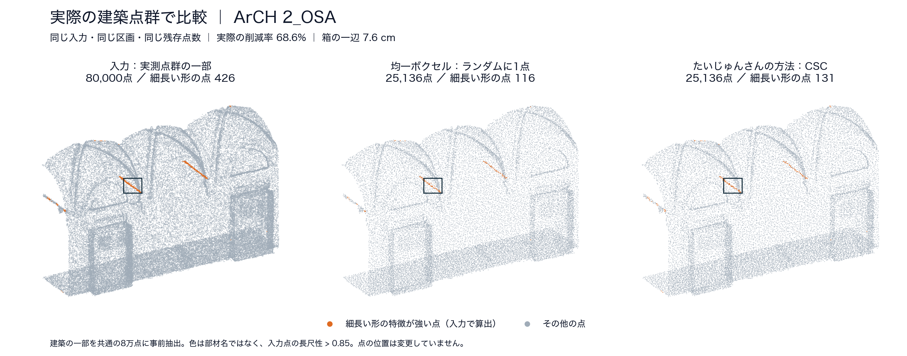
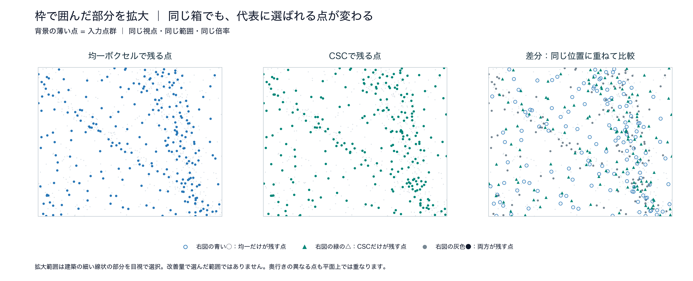
この1範囲の図は、寸法、メッシュ、分類における優位を示すものではありません。新しい実験は行わず、10月12日に作成・確認済みの比較図を掲載しています。
図の出典：ArCH dataset、Matrone et al. (2020), DOI。原点群は CC BY-NC-SA 4.0、抽出・間引き・可視化した比較図も同条件です。原点群は公開しません。
処理の構想図 · 実測結果ではありません
外付けUSB・HDD・SSD
用途とPCの制約に合わせる
原本は外付けに残す
分類・面の復元・計測など
用途に必要な品質を保ち、
限られたPCで最後まで処理できる条件を明らかにする。
既存ツールとの差は、これから検証
本研究の問い
長尺保持は候補。出口の品質でも確かめる。
比較方法の模式図 · 未測定
測る：完了率・総時間・最大メモリ・一時容量
測る：分類の正確さ、復元面の誤差など
測る：合格した候補の点数・時間・メモリ
同じ建物・後工程で比較。設定探索の負荷と失敗条件も含めます。
実験計画・公平な比較条件 ↗ESRは、元点群で局所的に線状と判定した点の保持率です。部材の長さや連続性を直接測るものではありません。CSC（局所形状を使う独自の間引き）はESRと特徴を共有するため、ESR改善だけで有効性を決めません。
長尺優先の有無を切り替えて効果を分けます。「設定が容易」と主張する場合は、同じ情報を渡した手順との作業時間・試行回数・品質違反を比較します。
2026年10月12日 · これから検証する計画
パラメータ最適化の問い
CSC（形状の特徴から、残す点を採点する仕組み）の重みを調整する。AIには、試した設定と品質の関係を学び、次に試す候補を選ぶ役割を持たせる。
CSCは人が設計した計算ルール。部材の名前をAIが認識して選ぶ仕組みではない。
5種類の倍率を一つずつ変える座標探索を2周。保存済みの結果はあるが、全組合せの最適を保証しない。
Random Forestという機械学習で柱や壁などを分類。削減方法を評価するために使用している。
有望さと不確かさから、次の重みを提案
同じ入力・同じ残存点数でCSCを実行
用途別の成績、欠落、時間を記録
設定と成績の関係を学び、01へ戻る
削減率や近傍の範囲を一緒に動かすと、何が効いたか分かりにくい。最初は条件を固定し、AIによる探索の効果を切り分ける。
最初の本試験は、一つの主用途・同じ残存点数・一つの主評価で比較する。
例えば寸法確認なら、指定した柱径・開口幅などの誤差を主評価にする。部位分類なら、同じ元の点で評価した部位ごとの分類成績を使う。どの用途を選ぶかと、許容誤差の数値は実験前に決める。
長尺点保持率（ESR）はCSCと似た形状特徴を使うため、それだけを最大化しても用途の品質を示せない。既存の重み調整でも、少数部材の点の保持と長尺点の保持にはトレードオフ（一方を良くすると他方が下がる関係）があった。
独立した実測寸法がない場合は「元点群からの追加のずれ」として評価し、実物への絶対精度とは区別する。品質の採点は固定した計算・基準で行う。
先に5項目の必要性を調べる工程で、残す構成を決める。ここでいう5項目は、形状特徴を組み合わせた5系統の構造スコア。AIが実際の柱や窓を認識した名前ではない。
| 段階 | 調整する値 | 固定する条件・進め方 |
|---|---|---|
| 最初の比較 | 残す構造スコアの倍率。候補は長尺・柱状・平面の縁・枠状・曲面の最大5系統。 | 各項目内の係数は現行の0.5 / 0.5、幾何スコアとの混合率は0.5、近傍点数は30。目標70%削減を起点に、全方式で入力と実際の残存点数をそろえる。 |
| 必要なら追加 | CSCと通常の幾何スコアの混合率（α）。 | 重みだけの比較後、混合率を変える意義がある場合に追加。全方式の探索範囲と予算を改めてそろえる。 |
| 効果の確認後 | 品質を満たす範囲での削減率。 | 「品質を守り、どこまで軽くできるか」を別実験で確認。最初の同点数比較と結果を混ぜない。 |
最初の候補範囲は既存の倍率 0 / 0.5 / 1 / 1.5 / 2 を利用する案。残す項目が5つなら名目上3,125組合せになる。項目数・範囲・除外条件は、必要性の比較後、本試験前に固定する。
CSCは値を正規化して使うため、全倍率を同じ比率で変えてもほぼ同じ点を選ぶ。実質的に重複する設定や全倍率0の扱いを全方式で統一する。有効な重みがほとんど残らなければ、AI探索が必要か自体を見直す。
調整しない場合の品質と処理時間を測る。自動調整を加える価値の起点。
重みを一つずつ変えて良い値を残す。現在の実装を再利用する。
同じ範囲から候補を選ぶ。学習しなくても十分かを確かめる。
結果から学び、有望な候補と、まだ分からない候補を選ぶ。
乱数3条件は最初の予備比較の案で、十分な信頼性を保証する数ではない。ばらつきに応じ、本試験の反復数を結果の良し悪しを見る前に定める。
手動調整より楽になったと主張する場合は、人が設定を選ぶ作業時間・試行数も同じ条件で別途測る。自動探索同士の比較だけでは、利用者の手間が減ったことまでは証明しない。
候補を繰り返し試し、品質を測る。複数建築の成績を同じ規則で集計する。
重み、処理条件、合格線を固定。採用理由と全試行の履歴を保存する。
設定の選定に使わなかった建築へ適用。改善と失敗を建物ごとに示す。
同じ建物を小さな範囲に分けても、別の建築として扱わない。範囲数や乱数の数を建物数に足さず、建物ごとの成績とばらつきを示す。
ArCHや3DITAには、既に結果を確認した建築が含まれる。「過去にも未使用のデータ」とは呼ばない。本試験での役割を先に定め、既知データでの再評価と、可能なら新たに確保する未使用建築での確認を区別する。
少数クラス保持率や分類成績の採点に正解ラベルを使う場合は、その準備コストも記録する。「重みを調整するときはラベルを使う／確定した重みで間引くときは使わない」を明記する。最終結果を見て再調整した建築は、以後は調整用として扱う。
同じ合格品質に、従来探索より少ない回数・短い時間で届く。
同じ時間または回数の上限で、守る条件を満たし、より良い設定が得られる。
確定した設定を、選定に使わない建築へ適用しても必要な品質を保てる。
優位性の主張は、差の大きさとばらつき、探索の追加費用、用途に必要な品質を合わせて判断する。
差がなければ「この範囲では単純な探索で十分」、悪化すれば「この特徴・評価・条件ではAI探索の利点を確認できなかった」と結論づける。評価基準を後から変えて勝ち筋を作らず、追加の探索は次の仮説として分ける。
結果が支持した場合の結論例「建築点群の用途別品質を保つ重みを、従来の探索より少ない試行で選択できた。」
「AIでしかできない」「真の最適値を発見した」とは断定しない。ベイズ最適化自体は既存技術。研究の貢献は、建築点群での評価設計、探索の効率、適用できる条件と限界の検証に置く。
用途・守る情報・主評価・合格線・調整用と評価用の建築を決め、1回の試行時間を測る。その後、重みの候補範囲と探索予算を固定して比較へ進む。
現状は実装と保存済み記録から確認。この章の追加に伴う点群実験の再実行、AI探索の実装、新しい優位性の検証は行っていない。
項目を開くと、ツールと測るものがわかります
まずは1つの主出口と合格条件を決める。主出口は未決定です。
下の見出しは8系統です。評価基準は計測／変化検出、構造／流体／音響を分けた11用途で整理しています。点群もすでに3Dデータ。メッシュ化は「面を張る」工程です。各ツールは候補で、導入・接続を確認した一覧ではありません。
改善の有無は結果で判断。最初の一歩は、実ファイル・PC・主出口の条件をそろえることです。
着手順と、結果別の論文の主張 ↗これまでの説明・数値・出典を保存しています
研究の軸を整理 · 2026年10月12日更新 ／ 以下の処理構想・比較計画は未実装・未検証を含む
研究の主目的：用途に必要な品質を保ちながら、取り込みから活用までを限られたPC環境で完了させる。
外付け媒体に原本を残し、用途に合わせた軽量版をPC内へ保存する流れを軸にします。「小さくなった」「長尺の点が残った」に加え、後工程で使えるかを確かめます。
想定する利用場面を研究の軸として整理したものです。対象者・PC・入力形式・主に検証する出口・品質の許容値は、実験前に具体化します。既存ツールに対する優位性を確定したものではありません。
「取り込む」の区別：内蔵ストレージへのコピーは保存容量の問題、処理中の読み込みはメモリの問題です。外付けから直接読んでも、全点をメモリに展開すれば不足する可能性があります。処理は初めからPC上で行い、軽量版だけを内蔵に保存する想定です。元ファイルを順次読む時間や、一時ファイルの容量も測定対象に含めます。
ストリーミング＝少量ずつ読み進める処理。空間を分けて処理する方法も候補ですが、長尺特徴の判定には周囲の点が必要です。分割境界で特徴が変わる、重複や欠落が出るといった影響を別途確かめます。現行CSCをそのまま逐次処理できるとは確認していません。
ArCHの5シーン・43範囲で、ESR改善と、元の点から最寄りの削減点までの距離誤差の悪化を記録。3DITAの8寺院・32範囲でも、ESRと全体の距離誤差が両立しない傾向を記録しています。
43範囲を43棟の独立した建物とは数えません。ArCHは各範囲を最大8万点にした部分点群実験です。距離誤差は実際のメッシュの成績や実物の寸法精度とは別です。
同条件でのHoudiniとの実測比較は、今回参照した記録では確認できません。実際の巨大ファイルを読み込み、間引き、後工程まで完了するかも未確認です。
現行コードは全点の近傍情報や配列をメモリに持ちます。「CPUで動く」と「少ないメモリで巨大データを処理できる」は別です。
| 削減率 | 均一ボクセル | CSC | 差（CSC − 均一） |
|---|---|---|---|
| 50%削減 | 24.39% | 24.37% | −0.02ポイント |
| 70%削減 | 24.12% | 23.94% | −0.18ポイント |
| 90%削減 | 20.32% | 20.17% | −0.15ポイント |
4シーンで学習し、残り1シーンで評価する比較を5回実施。同じ分類器を固定し、入力形状から特徴を再計算、予測を同じ元点群へ戻して採点した記録です。採点対象は41範囲・287条件、5シーン等重み。元点群は22.71%。この旧結果を再実行・再集計したものではありません。10月19日の1対象比較とは条件が異なります。分類器の絶対性能が低く、一貫した改善は未確認です。差が小さいことは同等性の証明ではなく、この結果だけで他の分類器での無効も断定できません。
外部記憶媒体に保存された大容量の建築点群を対象に、限られたPCのメモリと保存容量の下で、用途ごとの必要品質を満たす軽量点群を生成する処理・設定の方法を検討する。既存の間引き・読み込み手段と比較し、品質と処理負荷を両立できる条件、および適用限界を明らかにする。
背景として置く課題は「点群を取得する機会が広がっても、その後の取り込み・加工・活用が難しい場面がある」です。取得の普及度を本研究で測定済みとは扱わず、対象利用者の具体的な困りごとと実ファイルで裏づけます。
| 問い | 確かめること | 成果として残すもの |
|---|---|---|
| RQ1 · 処理を完了できるか | 対象PCの資源上限内で、外付け原本から軽量版を出力し、指定した後工程まで完了できるか。 | 入力規模に対する完了率、時間、最大メモリ、一時保存容量。完了しない規模・工程も記録。 |
| RQ2 · 必要品質を保てるか | 用途の合格条件を満たす候補の中で、既存手段より点数・時間・メモリを減らせるか。 | 用途別の品質とコストの関係、使える条件範囲。すべての必須品質を満たす候補だけを採用。 |
| RQ3 · 長尺保持は判断に役立つか | ESRの変化が、実際の分類や復元などの品質に対応するか。向上しない条件は何か。 | 指標の説明力と限界。予測を主張するなら、調整に使っていない建物で確かめる。 |
主評価はRQ1・RQ2、長尺保持はRQ3の補助評価です。ESR（長尺性保持率）は、元点群で局所的に線状と判定した点の保持率であり、柱・梁の本数、全長、連続性、寸法を直接測りません。CSCは本研究で実装・比較している、局所形状から点の優先度を決める間引き手法です。ESRと特徴を共有するため、ESR改善だけを成功条件にしません。
設定の容易さは追加の貢献候補：「使いやすい」「調整しやすい」と論文で主張する場合は、同じ情報・候補の手順書との作業比較を加えます。主目的の検証と混ぜず、設定時間・試行回数・品質違反を別に測ります。
研究の範囲：出口の整理は8系統を維持します。最初の実証は、独立した基準と実行環境を準備できる主出口を一つ選びます。複数用途での有効性を主張する段階で別の出口へ広げ、一用途の結果を全用途へ一般化しません。特定の出口はまだ決定していません。
外付け媒体からの読込、間引き、逐次処理は、それ自体を新規性にはしません。既存の処理基盤を再利用し、建築点群の用途別品質とPCの制約を合わせて判断する方法を比較します。以下の「差」は検証候補であり、既存ツールに機能がない、または本研究が優れているという断定ではありません。
| 対象 | 確認できた既存機能 | 本研究で検証する差・役割 |
|---|---|---|
| Houdini | Lidar Importで情報だけの読込や点数上限の指定。Reduceで格子ごとに削減。Measureで線状・面状の特徴を計算。 | 具体的なノード構成を固定し、同じ出口品質に達する全工程の負荷と設定作業を比較する。点数上限は最大メモリの保証ではない。 |
| PDAL | 対応する処理の組合せで逐次実行できる。sampleは点間の最小距離を保つ間引きに対応。 | 大容量入力を扱う既存基盤・省メモリ比較の候補。空間の広さや設定次第で保持する管理情報が増えるため、逐次処理でも実測する。 |
| CloudCompare | 乱択・空間間隔による削減、特徴量に応じた間隔調整を備える。 | 通常の手作業・特徴優先の比較候補。入力形式や規模で使えるかを確認し、処理が完了した条件を記録する。 |
| 現行のCSCコード | 局所特徴の優先度により、格子ごとに元の点を選ぶ。既存の小範囲実験・指標を再利用できる。 | 全点の近傍情報を保持する現行実装は、巨大原本の逐次処理を実証していない。省メモリ化と出口品質の両立を改めて確かめる。 |
| 本研究の構想 | 用途・品質・PC制約から候補を選び、軽量版と判断根拠を出す。実装・検証はこれから。 | 既存法を含めた候補から、必要品質を満たす低負荷な条件を選べるかを検証する。該当候補がなければ「条件を満たせない」と返す設計。 |
PDALでも、途中の処理が逐次実行に対応しない場合は全量を保持する実行に戻ることがあります。入力形式・全段階の対応を確認します。Houdiniの読込時削減と追加の間引きは別段階として記録し、二重に減らした効果をCSCの効果と混同しません。
設定を選ぶ規則と、実験後の分析を分ける：実際に使う選択規則は調整用データで定め、最終評価の前に固定します。正解を見て最良の設定を後から選ぶ分析は「到達可能な範囲」として別に示し、実行前に適切な設定を選べた証拠にはしません。候補の生成・試行・品質確認に要した時間とメモリも計上し、再利用する事前準備と一件ごとの費用を分けます。
正解ラベルや独立寸法がない実運用では、研究用の品質採点をそのまま自動実行できるとは限りません。推定による候補提示と、独立した基準による品質確認を区別し、確認できない品質は「確認済み」として渡しません。
用途を考慮したサンプリングや複数タスクを扱う先行研究もあるため、「用途別」「複数用途対応」だけで新規性を主張しません。文献上の未解決点の確定と、建築の実務条件での比較が必要です。SampleNet ／ LTA-PCS
二つの比較を分けます。同じ点数で比べると「点の選び方の効果」、同じ必要品質を満たす条件で比べると「処理負荷の差」が分かります。独自手法だけを有利に調整せず、各方法に同じ調整用データと試行予算を与えます。
比較：無削減で後工程へ渡す経路、PDAL／Houdini等の既存の軽量化経路、本研究の候補経路。対応形式と実行可能な経路を先に確定します。
条件：同じPC・同じ外付け媒体・同じ原本を使います。既存ツールも外付けから直接読み、不要な内蔵コピーを強制しません。入力は処理可能な規模から実際に困っている規模へ増やします。
測定：読込・解凍／索引作成・特徴計算・削減・書出し・再読込・後工程の時間、各工程と全体の最大メモリ、スワップ、内蔵の一時最大容量と最終容量、完了状態。前準備とキャッシュ後の再実行を分けます。
判定：指定の時間・メモリ・容量内で、出力を読み戻し、後工程の品質条件まで満たして合格。時間切れ・メモリ不足・出力失敗は除外せず記録します。
比較：全体からの乱択、均一ボクセル、CSCを同じ入出力・処理基盤で比べます。均一ボクセルは本研究では格子内から元点を一つ選ぶ方式で、全体の乱択とは区別します。実験1のソフト間比較とは別に扱います。
条件：50・70・90%削減を既存結果に接続する出発点とし、選択方法の比較では実残点数をそろえます。そろえられない結果は品質対点数の曲線として報告し、同点数比較とは呼びません。後工程は同一設定で固定。必要なら調整用データだけで条件を追加し、最終評価前に固定します。
測定：選んだ出口の主品質、部位別の見落としや欠損、点数、時間、最大メモリ、保存容量。ESRは補助として併記します。同点数の品質差と、全品質条件を満たす候補のコスト差を図にします。
判定：許容差は用途から事前設定。「差が有意でない」だけで同等としません。あるコストが下がり別が上がる場合は交換条件を示し、総合的な勝利と書きません。
比較：長尺の優先度だけを変える比較で、CSCの他の特徴を固定します。分割処理を導入する場合は、小規模データで同じ選択方法の一括処理と分割処理も比較します。
測定：出口品質、長尺部位の欠落や最大欠損長、分割境界の誤差・重複・欠落。入力順・分割サイズ・近傍の扱いによる変化も確認します。
判定：一括版と一致しない場合は変更・近似として明記します。分割でメモリが減った効果と、点の優先選択で品質が変わった効果を分けて報告します。
用途とPC制約から候補を選ぶ支援あり／同じ情報・候補を渡した手順書で比較します。対象利用者と課題を定め、練習条件をそろえ、課題への方法の割当と順序を入れ替えます。合格設定までの作業時間・試行回数・品質違反・未完了を記録します。本人1名の試行は事例評価とし、一般的な使いやすさの証明にはしません。
外付け原本を保管 → PC上で用途別に軽量化 → 軽量版をPC内へ保存 → 下記の出口へ → 品質と全工程コストを測定
点群はすでに3Dデータです。「面を張る」はメッシュ化（点から面のつながりを復元すること）に当たります。メッシュ化に分類は必須ではありません。部材ごとに別の処理をする場合は分類を挟みます。以下のツールは採用候補であり、このMacでの導入・接続・実データ処理を確認した一覧ではありません。
Gaussian Splatting／NeRFは写真・カメラ情報なども使う別の再構成経路です。XYZ点群に面を張るだけの処理や、寸法が正しいBIMの代わりとしては扱いません。ツールの存在はCSCの有効性を証明しません。
| 得られた結果 | 主張できる候補 | 追加で必要なこと |
|---|---|---|
| 必要品質を満たして負荷が減る | 測定条件下での、品質と資源の両立に関する改善。 | 未使用建物での確認、比較条件と負荷の内訳、悪化した側面の報告。 |
| 同点数で出口品質が上がる | その用途・条件に有効な点の選択方法。 | 実装負荷を含む全工程の評価。長尺保持が原因とするなら実験3。 |
| 設定支援で合格までの作業が減る | 対象利用者・課題での設定支援の有効性。 | 同じ情報の対照手順、誤設定と未完了を含む評価。 |
| ESRだけ上がる／既存法との差が出ない | ESRの有効範囲・限界、既存法で十分な条件を整理する候補。 | 評価器の妥当性・測定のばらつき・反例を検討。単なる差なしを同等性や自動的な研究成立とは扱わない。 |
想定する成果：再現可能な比較条件、用途別の品質と負荷の図、使える設定範囲と失敗条件、必要に応じた処理・設定支援の試作。すべてを新規ツールとして作る必要はありません。
仮題：「限られたPC環境における建築点群の用途別軽量化 — 外部媒体からの取り込みと活用品質の両立」
卒論としての必要水準と主張の妥当性は指導教員と確認します。比較で改善が出た場合も、検証していないPC・建物・用途に広げて保証しません。
保存済みの研究コード・実験記録・比較図に加え、2026年10月19日に部材分類の1対象・3方式を実測しました。新しい比較は「分類の予備実験」に条件と結果を掲載。過去の5建物平均とは評価条件が異なり、旧記録の再集計ではありません。
今回の分類品質は全方式で暫定基準未達。約3用途の比較、巨大データの処理完了、AI探索の効果は今後の検証事項です。未再検証の旧業界動向は今回の公開資料に含めていません。